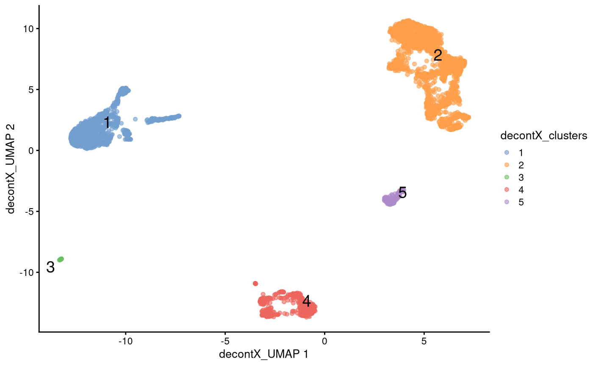
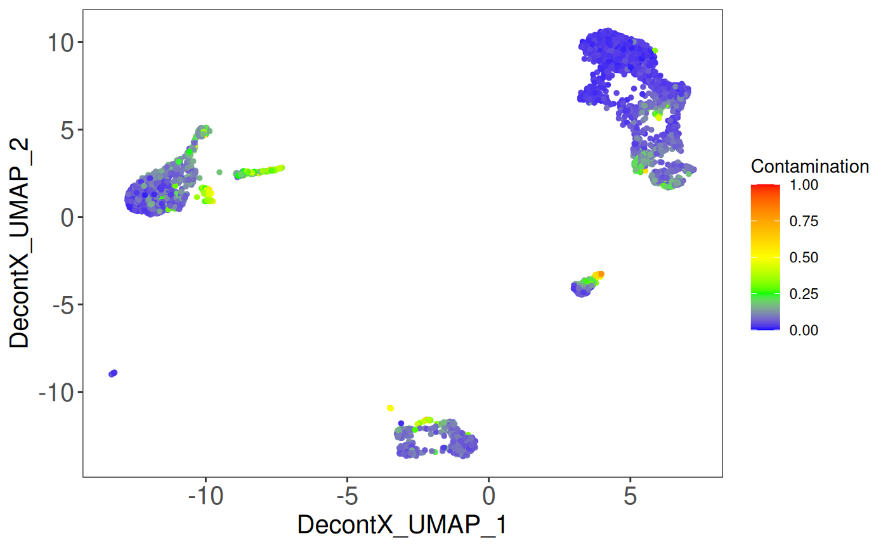
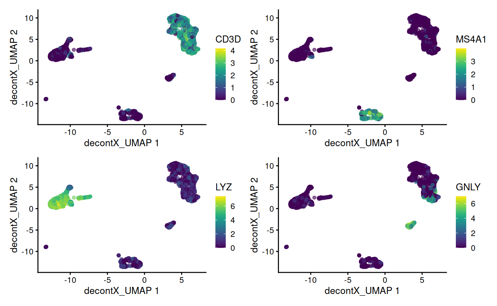
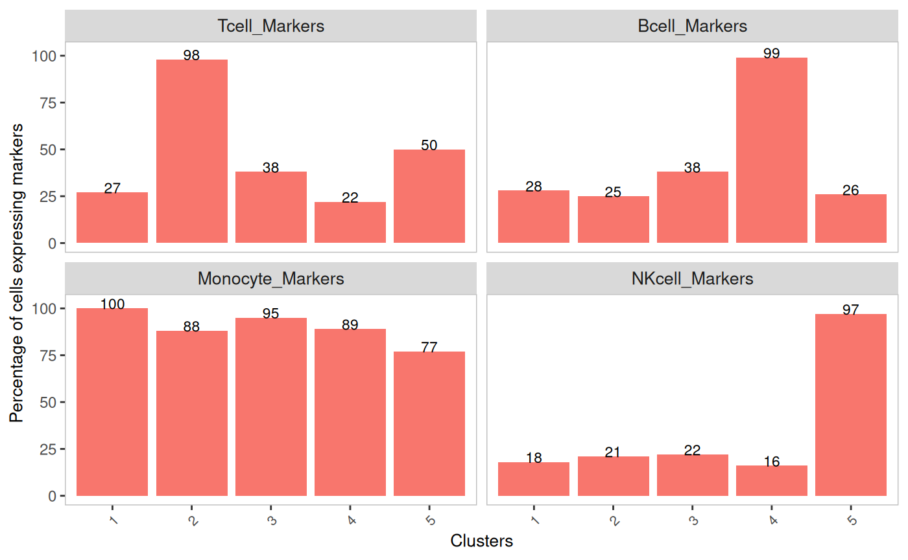
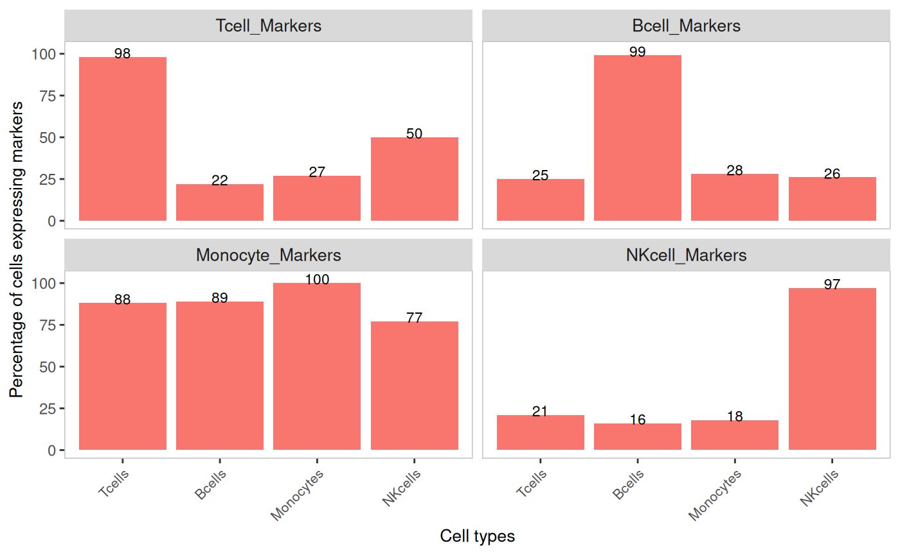
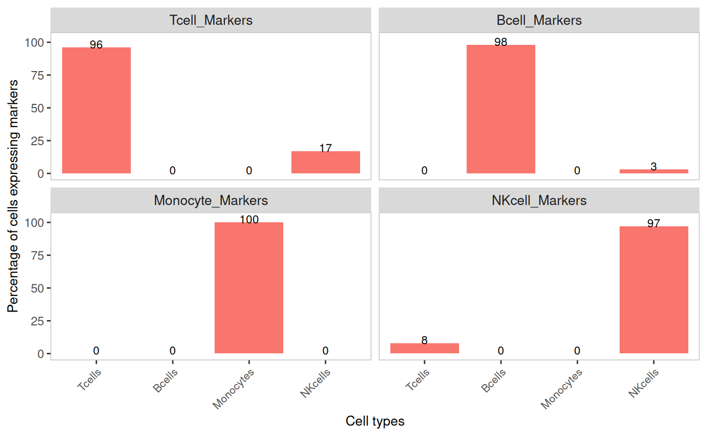
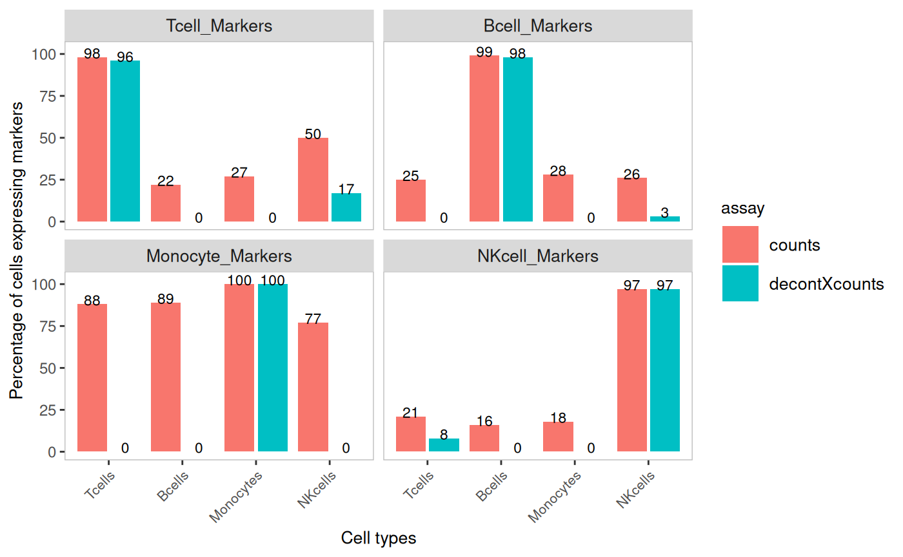
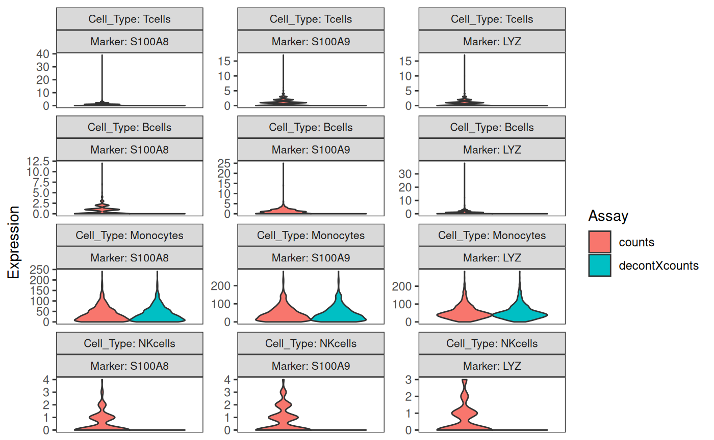
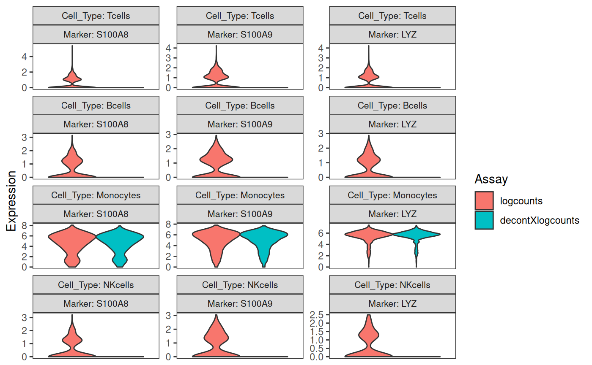
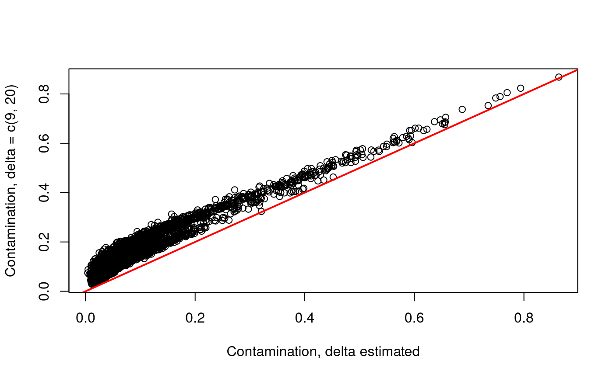

Decontamination of ambient RNA in single-cell genomic data with DecontX
Shiyi (Iris) Yang
Boston University School of MedicineZhe Wang
Boston University School of MedicineYuan Yin
Boston University School of MedicineJoshua Campbell
Boston University School of Medicinecamp@bu.edu
2026-11-21
Source:vignettes/decontX_RNA.Rmd
decontX_RNA.RmdIntroduction
Droplet-based microfluidic devices have become widely used to perform single-cell RNA sequencing (scRNA-seq). However, ambient RNA present in the cell suspension can be aberrantly counted along with a cell’s native mRNA and result in cross-contamination of transcripts between different cell populations. DecontX is a Bayesian method to estimate and remove contamination in individual cells. DecontX assumes the observed expression of a cell is a mixture of counts from two multinomial distributions: (1) a distribution of native transcript counts from the cell’s actual population and (2) a distribution of contaminating transcript counts from all other cell populations captured in the assay. Overall, computational decontamination of single cell counts can aid in downstream clustering and visualization.
For a short overview of the package and of DecontPro, its method for
protein (ADT) data, see Getting started with
decontX, vignette("decontX", package = "decontX").
Installation
The decontX package can be installed from Bioconductor:
if (!requireNamespace("BiocManager", quietly = TRUE)) {
install.packages("BiocManager")
}
BiocManager::install("decontX")Then the package can be loaded in R using the following command:
To see the latest updates and releases or to post a bug, see our GitHub page at https://github.com/campbio/decontX.
Importing data
DecontX can take either a SingleCellExperiment
object or a counts matrix as input. decontX will attempt to
convert any input matrix to class dgCMatrix from package Matrix
before starting the analysis.
To import datasets directly into an SCE object, the singleCellTK package has several importing functions for different preprocessing tools including CellRanger, STARsolo, BUStools, Optimus, DropEST, SEQC, and Alevin/Salmon. For example, the following code can be used as a template to read in the filtered matrices for multiple samples processed with CellRanger:
library(singleCellTK)
sce <- importCellRanger(sampleDirs = c("path/to/sample1/", "path/to/sample2/"))Within each sample directory, there should be subfolders called
"outs/filtered_feature_bc_matrix/" or
"outs/raw_feature_bc_matrix/" with files called
matrix.mtx.gz, features.tsv.gz and
barcodes.tsv.gz. If these files are in different
subdirectories, the importCellRangerV3Sample function can
be used to import data from a different directory instead.
The “raw” or “droplet” matrix, which also holds the empty droplets,
can be imported the same way and passed to the background
parameter, as shown in With the background
matrix. If using Seurat, go to the Working with
Seurat section for details on how to convert between SCE and Seurat
objects.
Load PBMC4k data from 10X
We will utilize the 10X PBMC 4K dataset as an example in this vignette. This data can be easily retrieved from the package TENxPBMCData. Make sure the column names are set before running decontX.
# Load PBMC data
library(TENxPBMCData)## Warning: replacing previous import 'BiocGenerics::version' by
## 'BiocManager::version' when loading 'AnnotationHub'
sce <- TENxPBMCData("pbmc4k")Running decontX
A SingleCellExperiment (SCE) object or a sparse matrix containing the
counts for filtered cells can be passed to decontX via the
x parameter. The matrix to use in an SCE object can be
specified with the assayName parameter, which is set to
"counts" by default. There are two major ways to run
decontX: without and with the raw/droplet matrix containing empty
droplets.
Without the background matrix
Here is an example of running decontX without supplying the background:
sce <- decontX(sce)In this scenario, decontX will estimate the
contamination distribution for each cell cluster based on the profiles
of the other cell clusters in the filtered dataset. The estimated
contamination results can be found in the
colData(sce)$decontX_contamination and the decontaminated
counts can be accessed with decontXcounts(sce).
decontX will perform heuristic clustering to quickly define
major cell clusters. However if you have your own cell cluster labels,
they can be specified with the z parameter. These results
will be used throughout the rest of the vignette.
Note on reproducing results from older versions: As of decontX 1.11.1, the heuristic clustering used when
zis not supplied (log-normalization, variable gene selection, PCA, and UMAP) is performed with the scrapper package instead of scater/scuttle, whose normalization functions were deprecated in Bioconductor 3.24. The workflow and parameters are unchanged, but contamination estimates may differ slightly from versions 1.11.0 and earlier because the UMAP embedding used for the initial clustering differs. To reproduce results from older versions, setlegacyInit = TRUE. This option requires the scater package and is kept for backwards compatibility; it will remain available as long as the underlying functions are still provided by scater/scuttle. Results are identical between versions when cluster labels are supplied withz.
With the background matrix
The raw/droplet matrix can be used to empirically estimate the distribution of ambient RNA, which is especially useful when cells that contributed to the ambient RNA are not accurately represented in the filtered count matrix containing the cells. For example, cells that were removed via flow cytometry or that were more sensitive to lysis during dissociation may have contributed to the ambient RNA but were not measured in the filtered/cell matrix.
The raw matrix holds every droplet barcode, including the empty
droplets. For data processed with CellRanger, it is in the
"outs/raw_feature_bc_matrix/" subfolder of each sample
directory, and singleCellTK imports it when the dataType
argument is set to “raw”. The PBMC4k data used in this vignette don’t
include the raw matrix, so this code is a template: replace the paths
with your own sample directories, the same ones used to import the
filtered matrix. The raw matrix can then be passed to decontX as an SCE
object or a sparse matrix with the background
parameter:
# Import the raw matrix, which includes the empty droplets
library(singleCellTK)
sce.raw <- importCellRanger(
sampleDirs = c("path/to/sample1/", "path/to/sample2/"),
dataType = "raw")
# Estimate the ambient RNA from the empty droplets
sce <- decontX(sce, background = sce.raw)Only empty droplets in the background matrix should be used to
estimate the ambient RNA. If any cell ids (i.e. colnames)
in the raw/droplet matrix supplied to the background
parameter are also found in the filtered counts matrix (x),
decontX will automatically remove them from the raw matrix. With
batch and bgBatch, the cell ids are matched
within each batch, so a barcode that is a cell in one sample can still
be an empty droplet in another. If either matrix has no cell ids,
nothing can be removed and decontX gives a warning. It also warns when
no cell id matches but the background has many droplets with as many
counts as a typical cell, which happens when the two matrices name the
same barcodes differently, for example with and without a sample
prefix.
When both matrices have gene names (row names), genes are matched by
name: genes in the background that are not in x are
dropped, and genes in x that are missing from the
background give an error. Matching by name needs unique names: if the
two matrices have different row names and either has a duplicated name,
decontX stops with an error. Gene symbols are sometimes duplicated, so
use gene IDs, or make.unique() on both. Without gene names,
the rows must be in the same order.
All of the outputs are the same as when running decontX without
setting the background parameter.
Note: If the input object is just a matrix and not an SCE object, make sure to save the output into a variable with a different name (e.g.
result <- decontX(mat)). The result object will be a list with contamination inresult$contaminationand the decontaminated counts inresult$decontXcounts.
Plotting DecontX results
Cluster labels on UMAP
DecontX creates a UMAP which we can use to plot the cluster labels automatically identified in the analysis. Note that the clustering approach used here is designed to find “broad” cell types rather than individual cell subpopulations within a cell type.
## Loading required package: scuttle## Loading required package: ggplot2
plotReducedDim(sce, dimred = "decontX_UMAP",
colour_by = "decontX_clusters", text_by = "decontX_clusters")
Contamination on UMAP
The proportion of contamination in each cell, between 0 and 1, can be plotted on the UMAP to visualize which clusters may have higher levels of ambient RNA.

Expression of markers on UMAP
Known marker genes can also be plotted on the UMAP to identify the
cell types for each cluster. We will use one marker for each cell type:
CD3D for T-cells, MS4A1 for B-cells, LYZ for monocytes, and GNLY for
NK-cells. Raw counts depend on how many transcripts were captured in
each cell, so we first log-normalize them: divide each cell’s counts by
its size factor (its total counts relative to the average cell) and take
the log. The normalized values are stored in the logcounts
assay, which the plots use.
# Matrix provides colSums() for sparse count matrices.
# Load scrapper after scater so that normalizeCounts() below refers to
# scrapper's function and not the deprecated scuttle version that scater
# attaches. patchwork combines several plots into one figure.
library(Matrix)
library(scrapper)
library(patchwork)
# The total counts of each cell (its library size)
librarySizes <- colSums(counts(sce))
# Size factors: library sizes scaled to have a mean of 1
sizeFactors <- centerSizeFactors(librarySizes)
# Log-normalize the original counts
logcounts(sce) <- normalizeCounts(counts(sce), size.factors = sizeFactors)
# Plot the expression of each marker on the UMAP
tcellPlot <- plotReducedDim(sce, dimred = "decontX_UMAP", colour_by = "CD3D")
bcellPlot <- plotReducedDim(sce, dimred = "decontX_UMAP", colour_by = "MS4A1")
monocytePlot <- plotReducedDim(sce, dimred = "decontX_UMAP", colour_by = "LYZ")
nkcellPlot <- plotReducedDim(sce, dimred = "decontX_UMAP", colour_by = "GNLY")
# Show the four plots together
wrap_plots(tcellPlot, bcellPlot, monocytePlot, nkcellPlot, ncol = 2)
Barplot of markers detected in cell clusters
The percentage of cells within a cluster that have detectable expression of marker genes can be displayed in a barplot. Markers for cell types need to be supplied in a named list:
markers <- list(Tcell_Markers = c("CD3E", "CD3D"),
Bcell_Markers = c("CD79A", "CD79B", "MS4A1"),
Monocyte_Markers = c("S100A8", "S100A9", "LYZ"),
NKcell_Markers = "GNLY")First, the detection of marker genes in the original
counts assay is shown for each cluster. A cell counts as
expressing a cell type’s markers when at least one of them is
detected:
plotDecontXMarkerPercentage(sce,
markers = markers,
assayName = "counts")
Most cell types stand out in this plot: the T-cell markers, for example, are detected in almost every cell of one cluster and in far fewer cells of the others. The monocyte markers, though, are detected in most cells of every cluster. They are highly expressed in monocytes, which makes them a large part of the ambient RNA: this is the contamination that decontX removes.
To label the plots by cell type instead of by cluster number, the
barplot functions take a groupClusters argument: a named
list that maps each cell type to the cluster label(s) it corresponds
to.
The cluster numbers assigned by the heuristic clustering can differ between decontX versions and platforms, so rather than typing them in, the code below finds, for each cell type, the cluster where its markers have the highest average count. The average count works better than detection here, since contaminating markers are often detected but at low counts:
# The cluster label of each cell
clusters <- sce$decontX_clusters
# The total count of each cell type's markers in each cell
tcellCounts <- colSums(counts(sce)[markers$Tcell_Markers, ])
bcellCounts <- colSums(counts(sce)[markers$Bcell_Markers, ])
monocyteCounts <- colSums(counts(sce)[markers$Monocyte_Markers, ])
# The NK-cell set has one marker, so its counts need no colSums()
nkcellCounts <- counts(sce)[markers$NKcell_Markers, ]
# The average of those counts in each cluster
tcellAverage <- tapply(tcellCounts, clusters, mean)
bcellAverage <- tapply(bcellCounts, clusters, mean)
monocyteAverage <- tapply(monocyteCounts, clusters, mean)
nkcellAverage <- tapply(nkcellCounts, clusters, mean)
# For each cell type, the cluster with the highest average
cellTypeMappings <- list(
Tcells = names(which.max(tcellAverage)),
Bcells = names(which.max(bcellAverage)),
Monocytes = names(which.max(monocyteAverage)),
NKcells = names(which.max(nkcellAverage)))
cellTypeMappings## $Tcells
## [1] "2"
##
## $Bcells
## [1] "4"
##
## $Monocytes
## [1] "1"
##
## $NKcells
## [1] "5"You can also build this list by hand: look at the barplot above,
decide which cluster corresponds to each cell type, and write it out.
For example, if T-cells were cluster 2, B-cells cluster 4, monocytes
cluster 1 and NK-cells cluster 5, the list would be
list(Tcells = "2", Bcells = "4", Monocytes = "1", NKcells = "5").
A single cell type can also span several clusters: give it a vector of
cluster labels. For example, if T-cells had been split into clusters 2
and 3, Tcells = c("2", "3") would group them together.
Clusters left out of the list are left out of the plots.
Now the detection of marker genes in the original counts
assay can be shown for each cell type:
plotDecontXMarkerPercentage(sce,
markers = markers,
groupClusters = cellTypeMappings,
assayName = "counts")
We can then look to see how much decontX removed aberrant expression
of marker genes in each cell type by changing the assayName
to decontXcounts:
plotDecontXMarkerPercentage(sce,
markers = markers,
groupClusters = cellTypeMappings,
assayName = "decontXcounts")
Percentages of marker genes detected in other cell types were reduced
or completely removed. For example, the percentage of cells that
expressed Monocyte marker genes was greatly reduced in T-cells, B-cells,
and NK-cells. The original counts and decontaminated counts can be
plotted side-by-side by listing multiple assays in the
assayName parameter. This option is only available if the
data is stored in a SingleCellExperiment object.
plotDecontXMarkerPercentage(sce,
markers = markers,
groupClusters = cellTypeMappings,
assayName = c("counts", "decontXcounts"))
Some helpful hints when using
plotDecontXMarkerPercentage:
-
groupClustersrenames and re-groups clusters, as described above. For example, to group T-cells and NK-cells together, list both of their clusters under one name, such aslist(NK_Tcells = c("2", "5"), Bcells = "4", Monocytes = "1"), using your own cluster labels. - The count at which a gene is considered detected in a cell can be
adjusted using the
thresholdparameter. - If you are not using a
SingleCellExperiment, then you will need to supply the original counts matrix or the decontaminated counts matrix as the first argument to generate the barplots.
Violin plot to compare the distributions of original and decontaminated counts
Another useful way to assess the amount of decontamination is to view
the expression of marker genes before and after decontX
across cell types. Here we view the monocyte markers in each cell type.
The violin plot shows that the markers have been removed from T-cells,
B-cells, and NK-cells, but are largely unaffected in monocytes.
plotDecontXMarkerExpression(sce,
markers = markers[["Monocyte_Markers"]],
groupClusters = cellTypeMappings,
ncol = 3)
Some helpful hints when using
plotDecontXMarkerExpression:
-
groupClustersworks the same way as inplotDecontXMarkerPercentage. - This function will plot each pair of markers and clusters (or cell
type specified by
groupClusters). Therefore, you may want to keep the number of markers small in each plot and call the function multiple times for different sets of marker genes. - You can also plot the individual points by setting
plotDots = TRUEand/or log transform the points on the fly by settinglog1p = TRUE. - This function can plot any assay in a
SingleCellExperiment. Therefore you could also examine normalized expression of the original and decontaminated counts. For example:
# Size factors from the decontaminated library sizes
decontLibrarySizes <- colSums(decontXcounts(sce))
decontSizeFactors <- centerSizeFactors(decontLibrarySizes)
# Log-normalize the decontaminated counts
assay(sce, "decontXlogcounts") <- normalizeCounts(decontXcounts(sce),
size.factors = decontSizeFactors)
plotDecontXMarkerExpression(sce,
markers = markers[["Monocyte_Markers"]],
groupClusters = cellTypeMappings,
ncol = 3,
assayName = c("logcounts", "decontXlogcounts"))
Other important notes
Working with Seurat
If you are using the Seurat package for downstream analysis, the following code can be used to read in a matrix and convert between Seurat and SCE objects:
# Read counts from CellRanger output
library(Seurat)
library(SingleCellExperiment)
counts <- Read10X("sample/outs/filtered_feature_bc_matrix/")
# Create a SingleCellExperiment object and run decontX
sce <- SingleCellExperiment(list(counts = counts))
sce <- decontX(sce)
# Create a Seurat object from a SCE with decontX results
seuratObject <- CreateSeuratObject(round(decontXcounts(sce)))Optionally, the “raw” matrix can also be imported and used as the background:
counts.raw <- Read10X("sample/outs/raw_feature_bc_matrix/")
sce.raw <- SingleCellExperiment(list(counts = counts.raw))
sce <- decontX(sce, background = sce.raw)Note that the decontaminated matrix of decontX consists of floating point numbers and must be rounded to integers before adding it to a Seurat object. If you already have a Seurat object containing the counts matrix and would like to run decontX, you can retrieve the count matrix, create a SCE object, and run decontX, and then add it back to the Seurat object:
# Retrieve the counts matrix from the Seurat object
library(Seurat)
library(SingleCellExperiment)
counts <- LayerData(seuratObject, assay = "RNA", layer = "counts")
# Create a SingleCellExperiment object and run decontX
sce <- SingleCellExperiment(list(counts = counts))
sce <- decontX(sce)
# Add the rounded decontaminated counts to the Seurat object as a new assay
decontCounts <- round(decontXcounts(sce))
seuratObject[["decontXcounts"]] <- CreateAssayObject(counts = decontCounts)Running decontX on multiple samples
Give decontX the sample of each cell with the batch
parameter. Each sample is then decontaminated on its own, which is what
you want: the ambient RNA differs between samples. If you have already
annotated your cells, give those labels with z; then
embedding = FALSE skips the UMAP, which saves most of the
run time on large data sets. Here sample and
cellType stand for columns in your own
colData:
sce <- decontX(sce,
batch = sce$sample,
z = sce$cellType,
embedding = FALSE)If any label in z appears in more than one sample, all
labels come back with their sample in front of them in
sce$decontX_clusters (for example
"sample1-Tcells"), since the same label may describe
different clusters in different samples. If you use
background, give the sample of each empty droplet with
bgBatch.
If the combined data are too large to hold in memory, you can instead
run decontX on each sample separately and combine the decontaminated
counts afterwards. This gives the same contamination estimates and
decontaminated counts as one run with batch; the cluster
labels just come back without the sample in front. With
background, give each run only the empty droplets of its
own sample.
Choosing appropriate cell clusters
The ability of DecontX to accurately identify contamination is
dependent on the cell cluster labels. DecontX assumes that contamination
for a cell cluster comes from a combination of counts from all other
clusters. The default clustering approach used by DecontX tends to
select fewer clusters that represent broader cell types. For example,
all T-cells tend to be clustered together rather than splitting naive
and cytotoxic T-cells into separate clusters. Custom cell type labels
can be supplied via the z parameter if some cells are not
being clustered appropriately by the default method.
Adjusting the priors to influence contamination estimates
There are ways to force decontX to estimate more or less
contamination across a dataset by manipulating the priors. The
delta parameter is a numeric vector of length two. It is
the concentration parameter for the Dirichlet distribution which serves
as the prior for the proportions of native and contamination counts in
each cell. The first element is the prior for the proportion of native
counts while the second element is the prior for the proportion of
contamination counts. These essentially act as pseudocounts for the
native and contamination in each cell. If
estimateDelta = TRUE, delta is only used to
produce a random sample of proportions for an initial value of
contamination in each cell. Then delta is updated in each
iteration. If estimateDelta = FALSE, then
delta is fixed with these values for the entire inference
procedure. Fixing delta and setting a high number in the
second element will force decontX to be more aggressive and
estimate higher levels of contamination in each cell at the expense of
potentially removing native expression. For example, in the previous
PBMC example, we can see what the estimated delta was by
looking in the estimates. They are stored for each batch; without
batch, all cells form one batch called
all_cells:
metadata(sce)$decontX$estimates$all_cells$delta## [1] 9.279698 1.047306Setting a higher value in the second element of delta and
estimateDelta = FALSE will force decontX to
estimate higher levels of contamination per cell. To compare the two
runs fairly, we give the second run the clusters from the first with
z. Since the clusters are already known,
embedding = FALSE skips the UMAP, which saves most of the
run time:
sce.delta <- decontX(sce,
z = sce$decontX_clusters,
delta = c(9, 20),
estimateDelta = FALSE,
embedding = FALSE)
plot(sce$decontX_contamination, sce.delta$decontX_contamination,
xlab = "Contamination, delta estimated",
ylab = "Contamination, delta = c(9, 20)")
abline(0, 1, col = "red", lwd = 2)
Each point is a cell. Points above the red line have a higher estimated contamination with the fixed priors than with the estimated ones.
Frequently asked questions
My data has only one cell type. Can I use decontX?
Without background, decontX learns the contamination by
comparing clusters, so it needs at least two of them; with one cell
type, it will split that cell type into clusters that aren’t real. With
background, the contamination
profile comes from the empty droplets instead, so a single cluster is
allowed. Give every cell the same label with z, and skip
the UMAP with embedding = FALSE, since the clusters are
already given:
Should I run doublet detection before or after decontX?
Run both on the same original counts. Run your doublet detector (for example scDblFinder or scds) on the original filtered counts, not on decontaminated counts. Doublet detectors are designed for raw integer counts, and decontX changes exactly what they look for: when a doublet is grouped with one of its two cell types, decontX treats the other cell’s transcripts as contamination and removes them, so the doublet looks like a single cell afterwards.
It’s fine when decontX and a doublet detector flag some of the same cells. High decontX contamination can itself indicate a doublet: in Yang et al. (2020), every cell with more than 70% estimated contamination was also called a doublet by Scrublet. Use both results together when you decide which cells to remove.
Citing decontX
If you use DecontX in your work, please cite:
Yang S, Corbett SE, Koga Y, Wang Z, Johnson WE, Yajima M, Campbell JD (2020). Decontamination of ambient RNA in single-cell RNA-seq with DecontX. Genome Biology, 21(1), 57. doi:10.1186/s13059-020-1950-6
To decontaminate protein (ADT) counts from CITE-seq, see the
decontPro vignette,
vignette("decontPro", package = "decontX"), and cite Yin et
al. (2024). citation("decontX") prints both references.
Session Information
## R version 4.6.1 (2026-06-24)
## Platform: x86_64-pc-linux-gnu
## Running under: Ubuntu 24.04.5 LTS
##
## Matrix products: default
## BLAS: /usr/lib/x86_64-linux-gnu/openblas-pthread/libblas.so.3
## LAPACK: /usr/lib/x86_64-linux-gnu/openblas-pthread/libopenblasp-r0.3.26.so; LAPACK version 3.12.0
##
## locale:
## [1] LC_CTYPE=en_US.UTF-8 LC_NUMERIC=C
## [3] LC_TIME=en_US.UTF-8 LC_COLLATE=en_US.UTF-8
## [5] LC_MONETARY=en_US.UTF-8 LC_MESSAGES=en_US.UTF-8
## [7] LC_PAPER=en_US.UTF-8 LC_NAME=C
## [9] LC_ADDRESS=C LC_TELEPHONE=C
## [11] LC_MEASUREMENT=en_US.UTF-8 LC_IDENTIFICATION=C
##
## time zone: Etc/UTC
## tzcode source: system (glibc)
##
## attached base packages:
## [1] stats4 stats graphics grDevices utils datasets methods
## [8] base
##
## other attached packages:
## [1] patchwork_1.3.2 scrapper_1.7.11
## [3] scater_1.41.3 ggplot2_4.0.3
## [5] scuttle_1.23.2 TENxPBMCData_1.31.0
## [7] HDF5Array_1.41.6 h5mread_1.5.7
## [9] rhdf5_2.57.20 DelayedArray_0.39.8
## [11] SparseArray_1.13.5 S4Arrays_1.13.3
## [13] abind_1.4-8 Matrix_1.7-6
## [15] SingleCellExperiment_1.35.2 SummarizedExperiment_1.43.0
## [17] Biobase_2.73.2 GenomicRanges_1.65.4
## [19] Seqinfo_1.3.2 IRanges_2.47.5
## [21] S4Vectors_0.51.10 BiocGenerics_0.59.13
## [23] generics_0.1.4 MatrixGenerics_1.25.0
## [25] matrixStats_1.5.0 decontX_1.11.38
## [27] BiocStyle_2.41.0
##
## loaded via a namespace (and not attached):
## [1] RColorBrewer_1.1-3 jsonlite_2.0.0 magrittr_2.0.5
## [4] ggbeeswarm_0.7.3 farver_2.1.2 rmarkdown_2.32
## [7] fs_2.1.0 ragg_1.5.2 vctrs_0.7.3
## [10] memoise_2.0.1 htmltools_0.5.9 BiocBaseUtils_1.15.1
## [13] AnnotationHub_4.3.3 curl_8.1.0 BiocNeighbors_2.7.3
## [16] Rhdf5lib_2.1.1 sass_0.4.10 parallelly_1.48.0
## [19] StanHeaders_2.39.1 bslib_0.12.0 htmlwidgets_1.6.4
## [22] desc_1.4.3 httr2_1.3.0 cachem_1.1.0
## [25] lifecycle_1.0.5 pkgconfig_2.0.3 rsvd_1.0.6
## [28] R6_2.6.1 fastmap_1.2.0 future_1.80.0
## [31] digest_0.6.39 AnnotationDbi_1.75.2 irlba_2.4.1
## [34] ExperimentHub_3.3.2 textshaping_1.0.5 RSQLite_3.53.3
## [37] beachmat_2.29.3 labeling_0.4.3 filelock_1.0.3
## [40] progressr_1.1.0 httr_1.4.9 compiler_4.6.1
## [43] bit64_4.8.6 withr_3.0.3 S7_0.2.2
## [46] inline_0.3.21 BiocParallel_1.47.0 viridis_0.6.5
## [49] DBI_1.3.0 QuickJSR_1.11.0 pkgbuild_1.4.8
## [52] rappdirs_0.3.4 loo_2.10.1 tools_4.6.1
## [55] vipor_0.4.7 otel_0.2.0 beeswarm_0.4.0
## [58] future.apply_1.21.0 MCMCprecision_0.4.2 glue_1.8.1
## [61] dbscan_1.2.7 rhdf5filters_1.25.5 grid_4.6.1
## [64] gtable_0.3.6 ScaledMatrix_1.21.0 BiocSingular_1.29.3
## [67] sp_2.2-4 XVector_0.53.0 ggrepel_0.9.8
## [70] BiocVersion_3.24.0 pillar_1.11.1 spam_2.11-4
## [73] dplyr_1.2.1 BiocFileCache_3.3.3 lattice_0.23-1
## [76] bit_4.6.0 tidyselect_1.2.1 Biostrings_2.81.9
## [79] knitr_1.52 gridExtra_2.3.1 bookdown_0.48
## [82] xfun_0.62 rstan_2.32.7 yaml_2.3.12
## [85] evaluate_1.0.5 codetools_0.2-20 tibble_3.3.1
## [88] BiocManager_1.30.27 cli_3.6.6 RcppParallel_6.2.1
## [91] systemfonts_1.3.2 jquerylib_0.1.4 Rcpp_1.1.2
## [94] globals_0.20.0 dbplyr_2.6.0 png_0.1-9
## [97] parallel_4.6.1 rstantools_2.7.1 pkgdown_2.2.1
## [100] blob_1.3.0 dotCall64_1.2 listenv_1.1.0
## [103] viridisLite_0.4.3 scales_1.4.0 SeuratObject_5.4.0
## [106] purrr_1.2.2 crayon_1.5.3 combinat_0.0-9
## [109] rlang_1.3.0 cowplot_1.2.0 KEGGREST_1.53.6